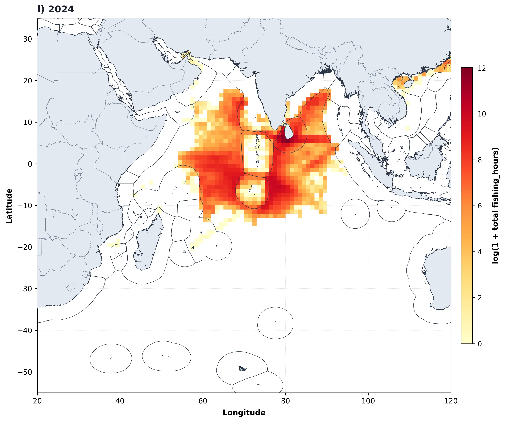
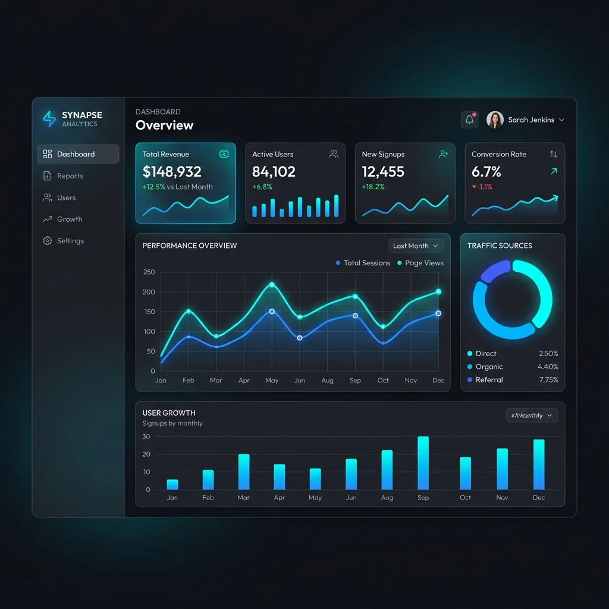

Replace Hours of Desktop Clicking with High-Speed Scripted Workflows
Desktop GIS software is ideal for visual exploration, but performing repetitive geoprocessing across hundreds of files or updating multi-temporal raster cubes manually is slow and prone to human error. GeoPhoenix develops modular, production-ready Python pipelines that automate your entire spatial data lifecycle.
We build automated workflows that download satellite tiles via APIs, reproject coordinate systems on the fly, execute spatial joins across millions of records with GeoPandas and spatial indexes (R-Tree / STRtree), perform chunked out-of-core raster algebra via Rasterio and Dask, and render hundreds of standardized map sheets automatically using PyQGIS and Matplotlib.
Geospatial Python Tech Stack
- GeoPandas, Shapely, PyProj & Fiona for vector processing
- Rasterio, GDAL/OGR, Xarray & NetCDF for multidimensional rasters
- Google Earth Engine (GEE) Python API & geemap integrations
- PyQGIS headless rendering & automated map book atlases
- PostGIS database ingestion & automated spatial SQL ETLs
Specialized GIS Automation Solutions
Custom scripted architectures designed to streamline organizational GIS operations.
Batch Vector Geoprocessing
Automated clipping, buffering, intersecting, dissolving, and attribute cleaning across thousands of Shapefiles or GeoPackages in seconds with spatial indexing.
High-Throughput Raster Pipelines
Automated mosaic blending, warp reprojection, nodata masking, and zonal statistics extraction from multi-gigabyte Digital Elevation Models or satellite tiles.
GEE Cloud Analytics Scripting
Server-side cloud scripting that extracts time-series spectral indices, filters imagery collections, and exports summarized regional tabular stats directly to Google Drive.
Automated Map Atlas Generation
Programmatic generation of hundreds of map layouts from a single template, iterating over boundary features with dynamic titles, legends, and scale bars.
Spatial ETL & Database Ingestion
Automated scripts connecting directly to REST APIs, downloading spatial feeds (GeoJSON/CSV), cleaning geometric errors, and updating PostgreSQL/PostGIS databases.
Reproducible Research Notebooks
Clean, PEP-8 compliant Jupyter Notebooks documenting every step of spatial analyses with inline charts, mathematical proofs, and environment requirement files.
Our Software Engineering Workflow
How we engineer reliable, maintainable geospatial automation scripts.
Workflow Audit & Architecture Design
Analyzing manual desktop steps, identifying computational bottlenecks, and defining data schemas, input arguments, and expected output specifications.
Modular Script Development
Writing clean, object-oriented or functional Python code utilizing spatial libraries with vectorized calculations, progress logging, and error handling.
Benchmarking & Edge-Case Testing
Testing scripts on large datasets, handling corrupt geometry topologies, null attributes, and ensuring memory efficiency with windowed reading.
Documentation & Client Handover
Packaging scripts with clear README installation instructions, dependency virtual environment files (`requirements.txt` or `environment.yml`), and run examples.
Featured GIS Automation Deliverables
Examine automated spatial scripts built for production workflows.

Automated Decadal Marine Map Pipeline
Engineered a custom Python script that iterates through 13 years of annual gridded fisheries effort data, automatically normalizing color bins, plotting gridded rasters with high-res coastlines, and outputting standardized publication map figures without user intervention.

Automated Spatial Analytics & Live Dashboard
Constructed an automated ETL data pipeline transforming raw operational coordinates and sales metrics into a dynamic, interactive dashboard with territory breakdowns, performance metrics, and instant visual reporting.
Automation Deliverable Packages
Every automation contract delivers fully documented, self-contained, and tested codebase packages:
Frequently Asked Questions
Technical answers to your GIS scripting and automation questions.
Not unless specifically requested. We prioritize open-source geospatial stacks (GeoPandas, Shapely, Rasterio, GDAL, PostGIS), ensuring your scripts run freely in any Python environment, on virtual servers, or in cloud Docker containers without costly recurring software licenses. If you require ArcPy scripts for an existing Esri enterprise deployment, we can build those as well.
We implement out-of-core memory strategies: using Rasterio windowed reading/writing to process large rasters block by block, and utilizing spatial indexes (STRtree/R-Tree) or database chunking (PostGIS spatial cursors) so your workflows process 50GB+ datasets smoothly on standard workstations.
Yes. We build custom QGIS Processing Provider algorithms (`QgsProcessingAlgorithm`) that integrate seamlessly into the QGIS Toolbox, featuring custom GUI input parameters, progress bars, and compatibility with the QGIS Graphical Modeler.
Yes. Every script delivery includes a 30-day warranty window for bug fixes, environmental configuration support, and remote onboarding to ensure your internal engineering or research staff can execute and modify the scripts with complete confidence.